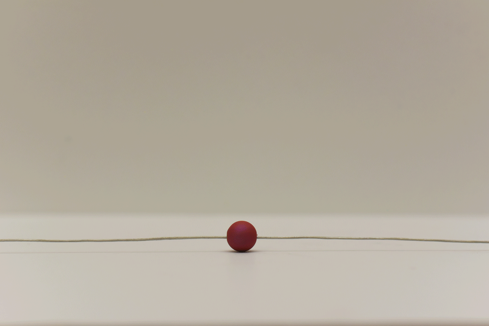

Prototype goal: develop a vision for a speculative world and create a prototype of it.
Scenario:
We decided to create a brand that we imagined would emerge in the world
where people are allergic to coffee, as people would be having a hard time withdrawing from the coffee addictions.
We wondered how market place and brands would react to such a conundrum. We had discussions about whether or not
people would feel depressed over the fact they have to potentially take different medicines and change their life habits to cope with the withdraws.
We speculate that a brand at that time would really try to provide positivity and hope to those that get intimidated by the new reality.
Such a brand might use the upright message to cammouflage their intention of perpetuating the monetary value of the new reality.
So we further studied brands that can be valuable to our situations. We looked at Juul, Apple, Pandora, and Tesla.
And eventually we set the tone for our brand–IMPULE.
Coffee withdraws have taken over the country since the sudden genetic mutation that affected almost half of the planet. The cause of the epidemic is still widely debated and discussed across the world. What we do know is that these withdraws are changing our lives slowly and lives and relationships became no longer the same for those that consider coffee as life rituals and daily essentials. At Impule, our mission is to help individuals who want to reorient their lives and live proudly as a coffee once-addict. We are turning the coping system into a fashion statement, making sure Impule fit in your life the way you like it.
Impule is a customized necklace connected by different personalized modules– the ”Impsules”. Impsules are varied in styles, shapes, colors and functions. They are magnetic and easily detachable. Whenever the user needs to use one of her/his impsules, by simply pull the sides of the impsules with force and the magnets on both sides will be disconnected. Many impsules have medicinal values and are purchase-approved by prescription. Users can refill their impsules daily or purchase the subscription service that will deliver them the re-useable impsules by mail. Each e-necklace has its own profile and ID. users can track their necklack as well as the bio-data the necklace is tracking, so they can monitor their health, mood, pill schedules, drowsiness, and so on.
I think we did well serving the purpose of the science fair, as we try to present our prototype as a real brand with a website, a physical product, and some business cards for people to grab and go. Once we decided on our prototype idea, we found a couple of stores where we could find the materials we needed. We ended up going to Beads World to pick the physical prototype element we needed. Then we had a photo shoot, preparing for the set up of our branding on our website. We designed an interactive website prototype and created a physical setup(paper postcard and business card) for the presentation. We believe our prototype is diverse in forms with the integration of analog and digital Technology.